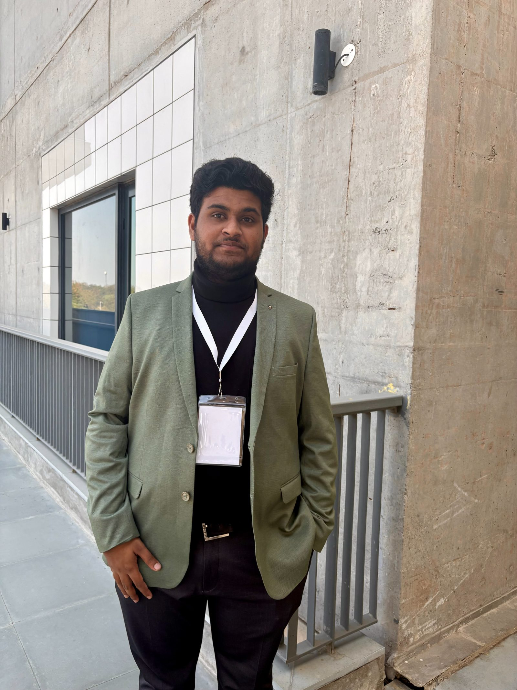
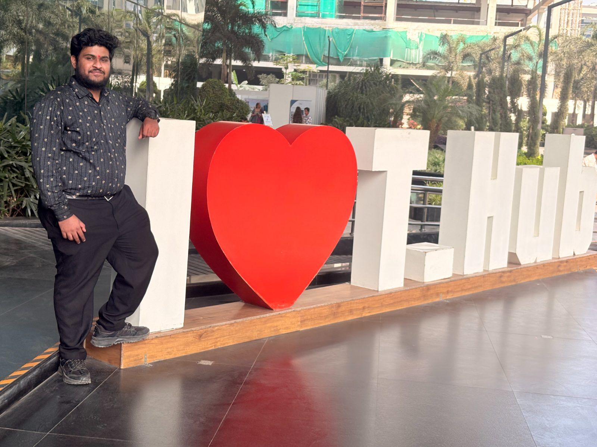

Handwriting Intelligence
20-factor analysis and personalised practice across five Indic scripts, live today.
Live Who buysSchoolsParentsCoaches Explore the productDeep-Tech · Dual-IMU Sensing + Motion Data · Made in India
Two priorities, one loop. The patented Vahini dual-IMU sensor pen writes on plain paper and feels what no camera can see: pressure, pen angle, writing speed and pen-lifts. Every consented page grows the world's first Indic handwriting-motion dataset. This is not a lab project. The analyser is live today, and every new writer makes the platform smarter.
Many products, one motion model
Every product below runs on the same proprietary handwriting-motion dataset and one model. Handwriting analysis is the live proof; each new product both ships value and feeds more motion data back into the moat, so the platform compounds instead of being capped by any single product.
20-factor analysis and personalised practice across five Indic scripts, live today.
Live Who buysSchoolsParentsCoaches Explore the productWrite on any paper, screen-free, and watch it digitise in real time.
In dev Who buysStudentsProfessionalsEnterprises Explore the productClassroom-level insight into how students write, for better outcomes.
Pilot Who buysSchoolsDistrictsGovernments Explore the productEarly motor screening and intervention, studied with clinicians.
Research Who buysTherapistsHospitalsClinics Explore the productVerify how a signature was written, not just how it looks, from the motion itself.
Next Who buysBanksInsuranceLegal The roadmap, in the notebookMotion intelligence as an API, build the future on Vahini for partners and researchers.
Future Who buysDevelopersPartnersAI labs Explore the API planOne pen · one signal · many markets
Vahini came first: screen-free, paper-based, motion-aware. The 20-factor analyser exists to back the pen with a product people can use today. From there, the same motion signal reaches market after market, no new hardware, no new data.
A dual-IMU sensor ballpoint that writes on ordinary paper and captures the motion of every stroke at 208 Hz, screen-free.
The source every market below draws from · Patent No. 58443320-factor analysis & personalised practice across five Indic scripts, the product that backs the pen.
Coaches, parents, students & schoolsClass notes written on paper, reconstructed from the IMU signal into a digital page. No tablet, no app open, no screen-time.
Students, schools & anyone who thinks better on paper · our founding ideaSupport for writing difficulty and the early motor signals behind it, studied with clinicians, never a standalone diagnosis.
Special schools, occupational therapists, accessibility & research partnersIndia’s consented, multi-script handwriting-motion data, a defensible asset and a future licensing line.
What makes every market above hard to copyMarkets shown to illustrate scope; size each with primary research before external use.
Traction & recognition
Granted IP, government recognition and a live product, plus where we've shown Vahini. Newest first, updated as we go.
Latest updates
Notes from the research frontier and moments from the road, as we build the pen, the dataset and the science behind them.

A pen only touches the paper part of the time. Telling writing from hovering is the heart of motion-based handwriting.
Read the post
Recognised for the dual-IMU pen and the 20-factor analyser, alongside a granted patent and DPIIT recognition.
See the recognition
From T-Hub to IIT and MSME forums, demoing how motion on ordinary paper becomes an actionable handwriting report.
See where we’ve beenFrom the road
Notes left in our book by educators, founders and students who tried Vahini in person.
Proven first in handwriting · Live today
Our handwriting solution is live now. Upload any handwritten page and get a 20-factor analysis with personalised exercises, across five Indic scripts. It's the working proof of everything the platform promises.
The asset nobody else holds
Every analysed page and every pen-stroke, captured with explicit consent, builds a corpus that doesn’t exist anywhere else: real handwriting motion across five Indic scripts and many ages. A camera company can scrape finished pages; only Vahini owns the motion behind them.
The technology
The pen reads motion, not the page, so it works on whatever paper you already use.
Two inertial units (one 9-axis with magnetometer, one 6-axis) plus a tip force sensor stream 16 axes at 208 Hz, Kalman-filtered.
No dot-pattern, no tablet, no special notebook. The signal comes from the pen, not the page.
Motion models tuned across five Indic scripts, the basis of a consent-first motion dataset.
Indian Patent No. 584433, DPIIT-recognised.
Try the analyser that's live today, or help build the platform behind it.